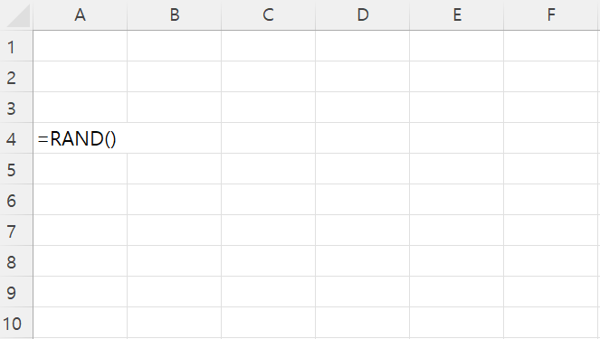
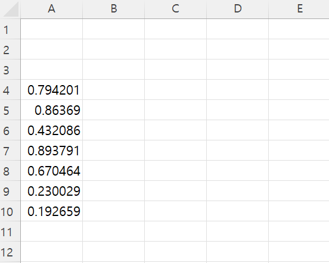
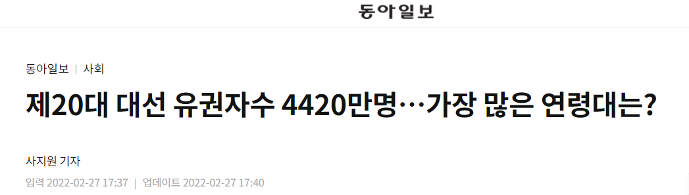
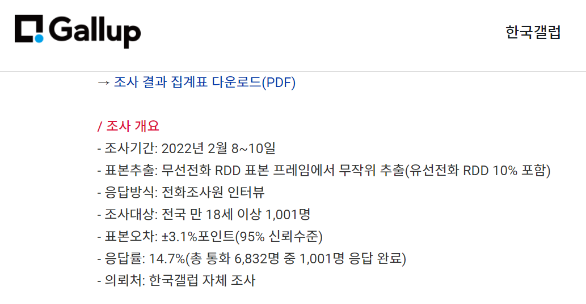
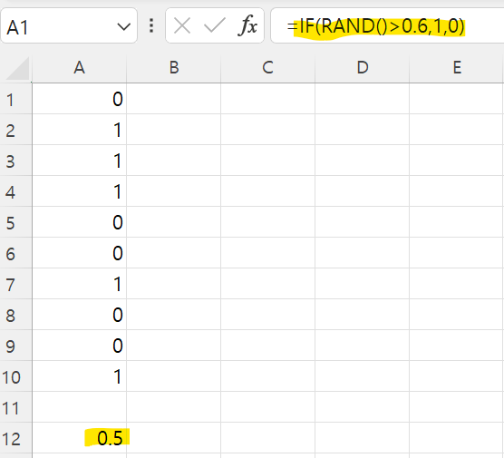

변수 X,Y,Z... 라는 말 많이 들어보셨죠?
변수란 무엇일까요? 바로 변하는 수를 말합니다.
어떤 숫자로 고정된 것이 아니라 나올 수 있는 값이 계속 변하는 숫자를 말합니다.
특히, 통계에서는 확률변수라는 확률이라는 단어를 붙여서 실생활의 여러 현상을 재현하는 도구로 사용한답니다.
따라서 확률변수를 잘 이해하는 것이 무척 중요하답니다.
그럼 엑셀을 이용해서 확률변수를 구해보도록 하겠습니다.
(1)엑셀을 실행하신 후, 셀에 =RAND()함수를 입력해주세요.
(2) F9키를 누르면 셀 안 숫자가 매번 바뀝니다.

그리고 Enter키를 눌러보면 짜잔-! 확률변수가 탄생했습니다.
제 확률변수는 0.7942가 나왔습니다만 여러분의 확률변수는 저와 다를 수 있답니다.
커서를 내려서 확률변수를 몇개 더 뽑아보겠습니다.
0.86369,0.432086,0.893791,0.670464...

우리가 방금 구한 확률변수를 구체적으로 균일 확률 분포를 따르는 확률변수라고 합니다.
그렇다면 이 확률 변수의 특징에 대해 알아볼까요?
- 이 확률변수는 0과 1사이의 숫자중 하나를 내놓습니다.
- 무슨 값이 나올지는 나오기전까지는 아무도 모른답니다
(한번 나왔던 숫자가 또 나올 수도 있고 아예 새로운 숫자가 나올 수도 있습니다.)
- 숫자가 나올 확률은 모두 같답니다
(2) 표본 & 표본 공간
확률변수에 대해 이해해보았으니 이제 표본과 표본공간에 대해 이해해볼 시간입니다.
-표본(sample)은 확률 변수에서 뽑혀져나온 관찰값들의 집단입니다. 아까 엑셀을 예시로 들면 0.7942,0.86369,0.432086...
이 숫자 하나하나가 다 표본이 되는 셈이죠.
-표본 공간 (sample space)는 표본이 뽑혀서 나올 수 있는 공간. 즉 어떤 사건의 관찰값이 될 수 있는 모든 후보들의 전체 집합을 말합니다.
위 예시에서는 0과 1사이의 모든 숫자가 표본 공간이 된답니다.
(3) 베르누이 확률 변수
위에서는 계속 균일 확률 분포를 따르는 확률 변수에 대해 공부하였습니다. 균일 확률 분포말고 다른 분포는 없을까요?
이런 궁금증에 대한 답으로 베르누이 확률 변수에 대해 알아보도록 하겠습니다.
베르누이 확률 변수는 0과 1 둘 중 하나의 값을 무작위로 뱉어내는 확률 변수입니다. 마치 동전 던지기와 비슷하지 않나요? ㅎ_ㅎ
다만 여기서는 p라는 확률 값이 있는데요, 이 p는 1이 나올 확률을 의미합니다.
p가 0.5인 베르누이 확률 변수는 1이 나올 확률이 0.5 , 0이 나올 확률이 0.5가 됩니다
이 경우 동전 던지기와 똑같아진답니다!
이 때 p값을 우리는 확률변수의 모수(Parameter)라고 하기로 했답니다.
모수가 어떤 값을 갖느냐에 따라 관찰값이 달라집니다.
p=1이라면 우리는 확률변수의 관찰값을 뽑을 때마다 1, 1, 1, 1, 1, 1 ..... 1이라는 숫자만 보게 될 것입니다.
반대로 p=0이라면 우리는 0, 0, 0, 0, 0.... 0이라는 숫자만 볼 것입니다.
(4) 모집단과 표본
통계학은 우리 실생활에서 일어나는 현상을 분석하기위해 발전한 학문입니다.
따라서 모집단과 표본의 개념을 잘 이해하는 것도 중요하답니다.
모집단은 특정 연구/조사의 대상이 되는 집단 전체를 의미합니다
반면 표본은 모집단에서 선택한 작은 집단을 말합니다
대한민국 대통령 후보 지지도 조사를 한다고 생각해봅시다.
이 경우 모집단은 대통령 선거 투표권을 행사할 수 있는 전체 국민이 되겠죠?

2022년 제 20대 대선에 투표할 수 있는 유권자 4419만7692명이 모집단이 됩니다.
그런데 모집단 한명 한명에게 지지도 조사를 한다는 것은 불가능하겠죠?
그래서 설문조사 기관에서는 1001명의 유권자들에게 지지도 조사를 진행했습니다.
이 경우의 표본은 1001명이 된답니다

그렇다면 표본은 모집단을 항상 잘 반영할까요?
특정 후보를 지지한다면 1 , 지지하지 않는다면 0으로 표시한다고 생각해봅시다.
그리고 이 후보의 지지도(p)가 0.6 이라고 가정한다면 우리는 베르누이 확률 변수를 이용해서 표본을 만들 수 있어요.
(1) 엑셀을 실행하고 if(RAND()>0.6,1,0) 함수를 입력해줍니다. 확률변수가 p보다 크면 지지한다, 아니면 지지하지 않는다를 의미합니다.
(2) 10개의 확률변수 관찰값을 뽑아서 결과를 보도록 하겠습니다.

제 경우에는 0.5 값이 나왔습니다.
아하, 표본이 모집단을 항상 잘 반영하는 것은 아니군요!
여러분도 직접 엑셀에서 실험해보세요
이것으로 확률변수, 모집단과 표본 이해하기를 마치도록 하겠습니다